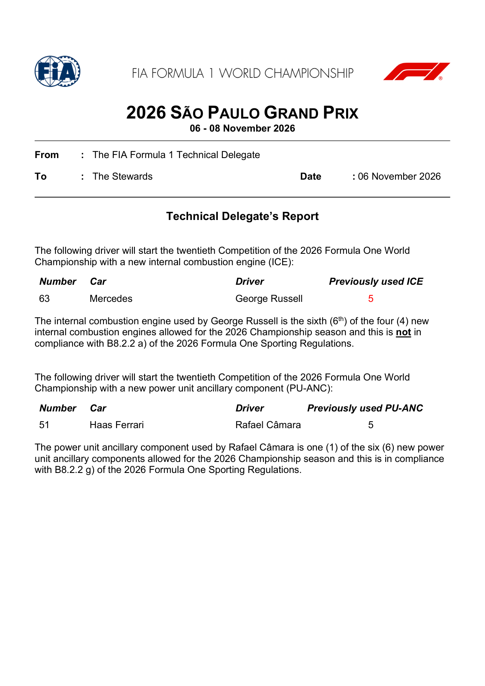
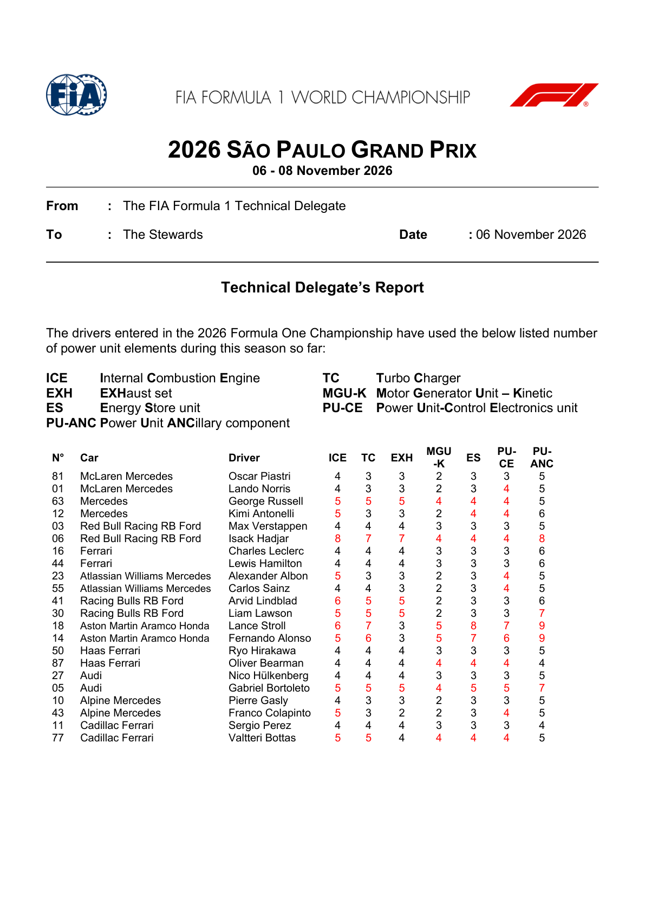
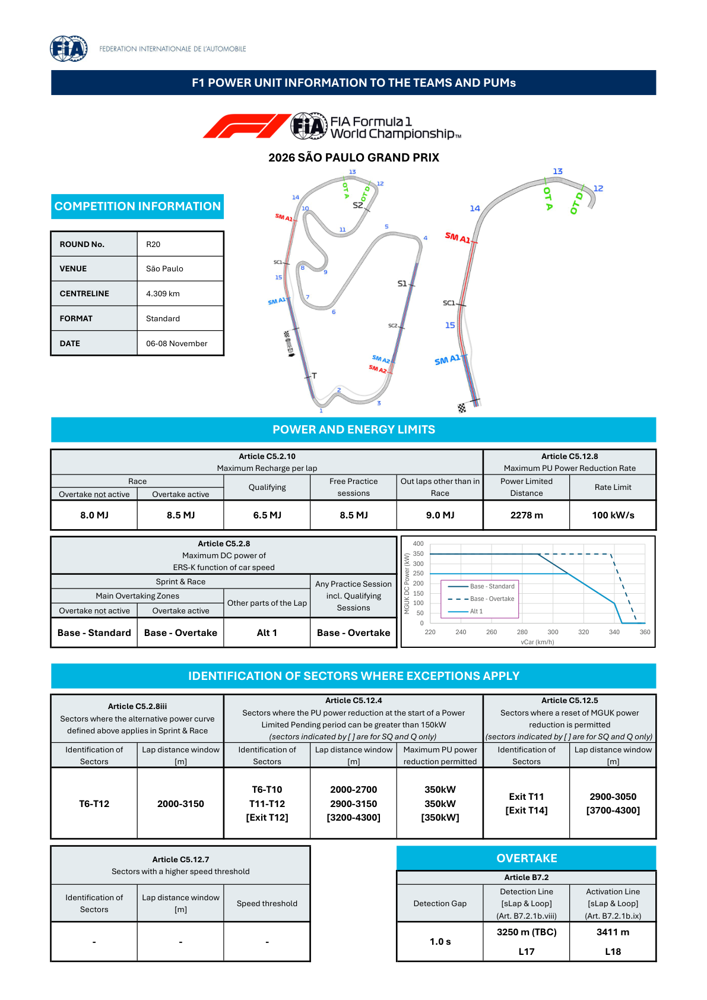
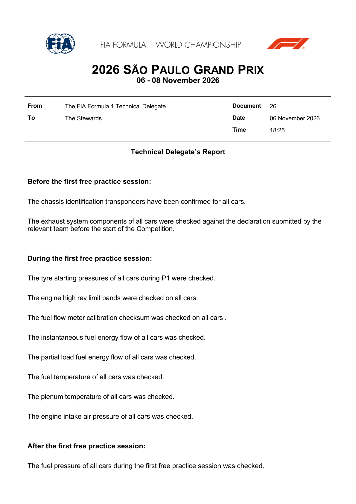
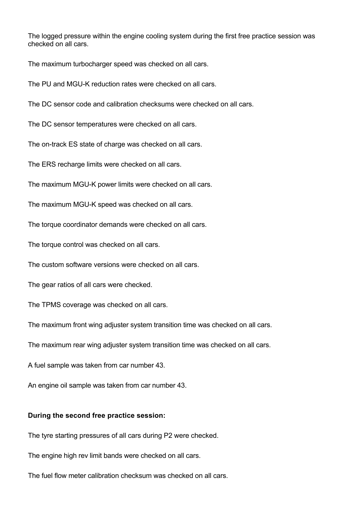
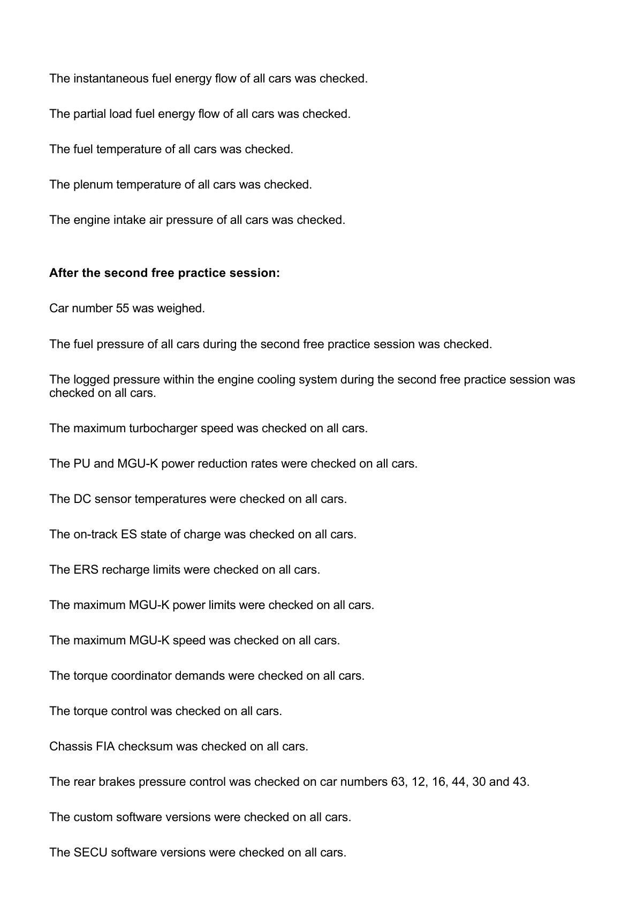
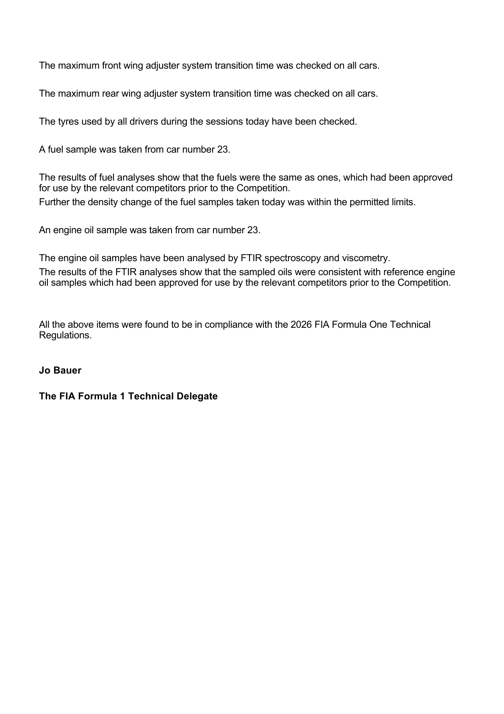

Power Unit & Overtake
The 2026 power unit, active aero and the per-event energy map.
FIA official power-unit documents
Official source; curated transcription may await review. Linked PDFs are the authority. Discovery does not extract or verify numeric values, and does not replace the curated material below.
Last successful FIA document discovery: 2026-11-07T12:18:43.922219+00:00. This is retrieval time, not issue time; newer revisions may exist.
- 2026_sao_paulo_grand_prix_-_fp1_and_fp2_scrutineering.pdf (official PDF)
- 2026_sao_paulo_grand_prix_-_new_pu_elements_for_this_competition.pdf (official PDF)
- 2026_sao_paulo_grand_prix_-_pu_elements_used_per_driver_up_to_now.pdf (official PDF)
- 2026_sao_paulo_grand_prix_-_power_unit_information.pdf (official PDF)
What changed for 2026
- Roughly a 50/50 split between internal combustion and electrical power.
- The MGU-H is gone; the MGU-K is substantially more powerful.
- 100% sustainable fuel.
- Overtake is a separate electrical-power aid with an event-specific energy allowance defined by the FIA map.
- Active aerodynamics let the cars switch between a high-downforce and a low-drag straight-line mode.
What to look for at this circuit
- Deployment matters most where the full-throttle run is longest — watch the longest straight for where Overtake deployment is most valuable.
- Energy-rich layouts let drivers deploy more freely; energy-limited ones force lifting and coasting.
- Overtake detection and activation points are defined per circuit in the FIA document.
- Practice and qualifying generally run a more permissive power curve than the race — expect Sunday straight-line speed to look weaker than Saturday's.
Brazil's new power-unit elements
FIA Document 14, published at 16:33 CET on 6 November, lists Russell's sixth ICE and Rafael Câmara's new PU-ANC. The Technical Delegate states that Russell's ICE is not compliant with B8.2.2(a), while Câmara's PU-ANC is within the six-element allowance under B8.2.2(g). This report is not the Stewards' penalty decision. The Stewards' separate Document 15 imposes a five-place drop for the next race in which Russell participates. Read Document 15.
| No. | Constructor | Driver | New element | Previously used | Season allowance | Technical Delegate's report |
|---|---|---|---|---|---|---|
| 63 | Mercedes | George Russell | ICE | 5 | 4 | Sixth used; not compliant with B8.2.2(a) |
| 51 | Haas Ferrari | Rafael Câmara | PU-ANC | 5 | 6 | One of six allowed; compliant with B8.2.2(g) |

Season-to-date power-unit usage
The FIA Technical Delegate's report dated 6 November lists the number of each element used by the 22 race-entered drivers so far this season. It was retrieved at 14:30 UTC, before the scheduled 15:30 UTC start of FP1, so it is a pre-running snapshot. These are usage totals, not a declaration of which new parts are fitted for Brazil. Russell's five ICEs in that snapshot are the parts used before the new sixth ICE listed in Document 14; the usage report is not an event-specific new-parts declaration or a penalty decision.
| No. | Driver | ICE | TC | EXH | MGU-K | ES | PU-CE | PU-ANC |
|---|---|---|---|---|---|---|---|---|
| 81 | Oscar Piastri | 4 | 3 | 3 | 2 | 3 | 3 | 5 |
| 01 | Lando Norris | 4 | 3 | 3 | 2 | 3 | 4 | 5 |
| 63 | George Russell | 5 | 5 | 5 | 4 | 4 | 4 | 5 |
| 12 | Kimi Antonelli | 5 | 3 | 3 | 2 | 4 | 4 | 6 |
| 03 | Max Verstappen | 4 | 4 | 4 | 3 | 3 | 3 | 5 |
| 06 | Isack Hadjar | 8 | 7 | 7 | 4 | 4 | 4 | 8 |
| 16 | Charles Leclerc | 4 | 4 | 4 | 3 | 3 | 3 | 6 |
| 44 | Lewis Hamilton | 4 | 4 | 4 | 3 | 3 | 3 | 6 |
| 23 | Alexander Albon | 5 | 3 | 3 | 2 | 3 | 4 | 5 |
| 55 | Carlos Sainz | 4 | 4 | 3 | 2 | 3 | 4 | 5 |
| 41 | Arvid Lindblad | 6 | 5 | 5 | 2 | 3 | 3 | 6 |
| 30 | Liam Lawson | 5 | 5 | 5 | 2 | 3 | 3 | 7 |
| 18 | Lance Stroll | 6 | 7 | 3 | 5 | 8 | 7 | 9 |
| 14 | Fernando Alonso | 5 | 6 | 3 | 5 | 7 | 6 | 9 |
| 50 | Ryo Hirakawa | 4 | 4 | 4 | 3 | 3 | 3 | 5 |
| 87 | Oliver Bearman | 4 | 4 | 4 | 4 | 4 | 4 | 4 |
| 27 | Nico Hulkenberg | 4 | 4 | 4 | 3 | 3 | 3 | 5 |
| 05 | Gabriel Bortoleto | 5 | 5 | 5 | 4 | 5 | 5 | 7 |
| 10 | Pierre Gasly | 4 | 3 | 3 | 2 | 3 | 3 | 5 |
| 43 | Franco Colapinto | 5 | 3 | 2 | 2 | 3 | 4 | 5 |
| 11 | Sergio Perez | 4 | 4 | 4 | 3 | 3 | 3 | 4 |
| 77 | Valtteri Bottas | 5 | 5 | 4 | 4 | 4 | 4 | 5 |

Published Sao Paulo energy map
| Session / condition | Maximum recharge per lap |
|---|---|
| Race, Overtake inactive / active | 8.0 / 8.5 MJ |
| Qualifying | 6.5 MJ |
| Free practice | 8.5 MJ |
| Out-laps outside the race | 9.0 MJ |
Power-limited distance 2278 m, reduction-rate limit 100 kW/s. Alt 1 applies at T6–T12 (2000–3150 m). Up to 350 kW initial reduction is permitted at T6–T10 (2000–2700 m), T11–T12 (2900–3150 m) and the bracketed exit T12 window (3200–4300 m). Reset windows are exit T11 (2900–3050 m) and bracketed exit T14 (3700–4300 m). Bracketed entries are qualifying-only here: the generic FIA template also names Sprint Qualifying, but this is a standard weekend. No higher-speed-threshold sector is listed.
Overtake detection gap 1.0 s; detection 3250 m (TBC), L17, activation 3411 m, L18. Keep the published TBC qualification; do not convert it into a confirmed distance.

FP1 and FP2 technical checks
FIA Technical Delegate Document 26 records checks before, during and after Friday's sessions, including fuel-energy flow, energy-store state of charge, ERS recharge limits, MGU-K limits, gear ratios and tyre monitoring. After FP2, car 55 was weighed and rear-brake pressure control was checked on cars 63, 12, 16, 44, 30 and 43. Fuel and engine-oil samples from cars 43 and 23 were analysed; the report says they were consistent with approved references and that all listed items complied with the 2026 Technical Regulations. FIA Document 26, pages 1–4.
Official FIA document screenshots
Automatically rendered from the official PDFs. These figures do not update or verify the curated numeric transcriptions above. Unchanged pages already illustrated above are not repeated here.
2026_sao_paulo_grand_prix_-_fp1_and_fp2_scrutineering.pdf
PDF retrieved 2026-11-07T12:18:45+00:00; this is not its issue date.



